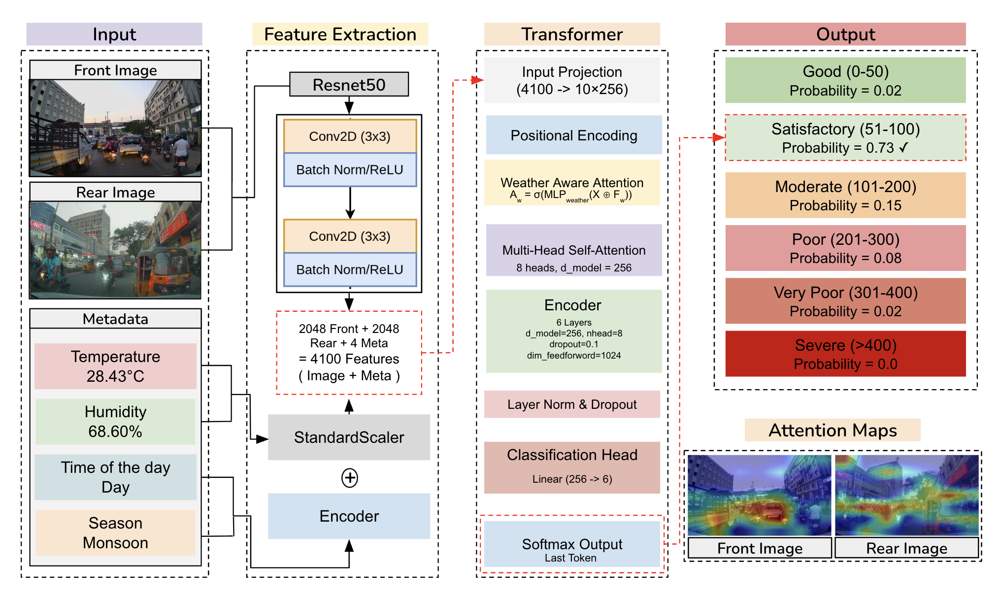
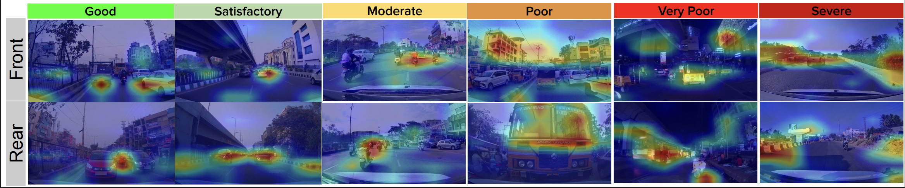

AQIFormer: A Transformer-Based Multi-View Architecture for Cross-City Air Quality Classification
Abstract
Air pollution is a critical environmental and public health challenge, yet traditional sensor-based air quality monitoring remains expensive and sparsely deployed, making it difficult to capture local, traffic-driven pollution patterns. In this work, we explore image-based AQI estimation using real-world traffic scenes.
We introduce AQIFormer, a transformer-based multi-view architecture that fuses synchronized front and rear traffic images with meteorological parameters (temperature, humidity, time-of-day, and season). A dual-view integration module learns attention weights over the two views, while a weather-aware attention mechanism adapts the transformer’s focus to current atmospheric conditions. A multi-task learning framework jointly predicts AQI category, season, and day/night, yielding more discriminative and robust representations.
Evaluated on the TRAQID dataset comprising 26,678 front–rear image pairs from Hyderabad, India, AQIFormer achieves 89.96% accuracy, outperforming existing image-based baselines by a large margin. Using few-shot adaptation on an independent dataset collected in Nagpur, the model maintains 81.67% accuracy with only an 8.29% performance drop, demonstrating strong cross-city generalization and practical viability for scalable camera-based air quality monitoring.
Architecture & Attention Maps


Poster
BibTeX
@inproceedings{kathalkar2025aqiformer,
title = {AQIFormer: A Transformer-Based Multi-View Architecture for Cross-City Air Quality Classification},
author = {Kathalkar, Om Rajendra and Nilesh, Nitin and Chaudhari, Sachin and Namboodiri, Anoop},
booktitle = {Proceedings of the Indian Conference on Computer Vision, Graphics and Image Processing (ICVGIP)},
year = {2025},
address = {Mandi, India},
publisher = {ACM},
doi = {10.1145/3774521.3774577},
url = {https://dl.acm.org/doi/10.1145/3774521.3774577}
}